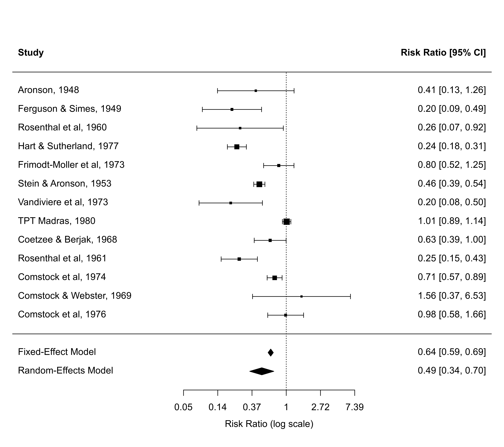

addpoly.rma.RdFunction to add a polygon to a forest plot showing the summary estimate with corresponding confidence interval based on an object of class "rma".
# S3 method for rma
addpoly(x, row=-2, level=x$level, annotate,
addpred=FALSE, digits, width, mlab, transf, atransf, targs,
efac, col, border, lty, fonts, cex, ...)an object of class "rma".
numeric value to specify the row (or more generally, the horizontal position) for plotting the polygon (the default is -2).
numeric value between 0 and 100 to specify the confidence interval level (the default is to take the value from the object).
optional logical to specify whether annotations for the summary estimate should be added to the plot.
logical to specify whether the bounds of the prediction interval should be added to the plot (the default is FALSE).
optional integer to specify the number of decimal places to which the annotations should be rounded.
optional integer to manually adjust the width of the columns for the annotations.
optional character string giving a label for the summary estimate polygon. If unspecified, the function sets a default label.
optional argument to specify a function to transform the summary estimate and confidence interval bound (e.g., transf=exp; see also transf).
optional argument to specify a function to transform the annotations (e.g., atransf=exp; see also transf).
optional arguments needed by the function specified via transf or atransf.
optional vertical expansion factor for the polygon.
optional character string to specify color to use for the polygon. If unspecified, the function sets a default color.
optional character string to specify the color to use for the border of the polygon. If unspecified, the function sets a default color.
optional character string to specify the line type for the prediction interval. If unspecified, the function sets this to "dotted" by default.
optional character string to specify the font to use for the label and annotations.
optional symbol expansion factor.
other arguments.
The function can be used to add a four-sided polygon, sometimes called a summary ‘diamond’, to an existing forest plot created with the forest function. The polygon shows the summary estimate (with its confidence interval bounds) based on an equal- or a random-effects model. Using this function, summary estimates based on different types of models can be shown in the same plot. Also, summary estimates based on a subgrouping of the studies can be added to the plot this way. See ‘Examples’.
If unspecified, arguments annotate, digits, width, transf, atransf, targs, efac (only if the forest plot was created with forest.rma), fonts, cex, annosym, and textpos are automatically set equal to the same values that were used when creating the forest plot.
Viechtbauer, W. (2010). Conducting meta-analyses in R with the metafor package. Journal of Statistical Software, 36(3), 1–48. https://doi.org/10.18637/jss.v036.i03
forest.rma and forest.default for functions to draw forest plots to which polygons can be added.
### meta-analysis of the log risk ratios using the Mantel-Haenszel method
res <- rma.mh(measure="RR", ai=tpos, bi=tneg, ci=cpos, di=cneg, data=dat.bcg,
slab=paste(author, year, sep=", "))
### forest plot of the observed risk ratios with summary estimate
forest(res, atransf=exp, xlim=c(-8,6), ylim=c(-2.5,16), header=TRUE)
### meta-analysis of the log risk ratios using a random-effects model
res <- rma(measure="RR", ai=tpos, bi=tneg, ci=cpos, di=cneg, data=dat.bcg)
### add summary estimate from the random-effects model to the forest plot
addpoly(res)

### forest plot with subgrouping of studies and summaries per subgroup
res <- rma(measure="RR", ai=tpos, bi=tneg, ci=cpos, di=cneg, data=dat.bcg,
slab=paste(author, year, sep=", "))
tmp <- forest(res, xlim=c(-16, 4.6), at=log(c(.05, .25, 1, 4)), atransf=exp,
ilab=cbind(tpos, tneg, cpos, cneg), ilab.xpos=c(-9.5,-8,-6,-4.5),
cex=.75, ylim=c(-1, 27), order=alloc, rows=c(3:4,9:15,20:23),
mlab="RE Model for All Studies", header="Author(s) and Year")
op <- par(cex=.75, font=2)
text(c(-9.5,-8,-6,-4.5), tmp$ylim[2]-1, c("TB+", "TB-", "TB+", "TB-"))
text(c(-8.75,-5.25), tmp$ylim[2], c("Vaccinated", "Control"))
par(font=4)
text(-16, c(24,16,5), c("Systematic Allocation", "Random Allocation",
"Alternate Allocation"), pos=4)
par(op)
res <- rma(measure="RR", ai=tpos, bi=tneg, ci=cpos, di=cneg, data=dat.bcg,
subset=(alloc=="systematic"))
addpoly(res, row=18.5, mlab="RE Model for Subgroup")
res <- rma(measure="RR", ai=tpos, bi=tneg, ci=cpos, di=cneg, data=dat.bcg,
subset=(alloc=="random"))
addpoly(res, row=7.5, mlab="RE Model for Subgroup")
res <- rma(measure="RR", ai=tpos, bi=tneg, ci=cpos, di=cneg, data=dat.bcg,
subset=(alloc=="alternate"))
addpoly(res, row=1.5, mlab="RE Model for Subgroup")